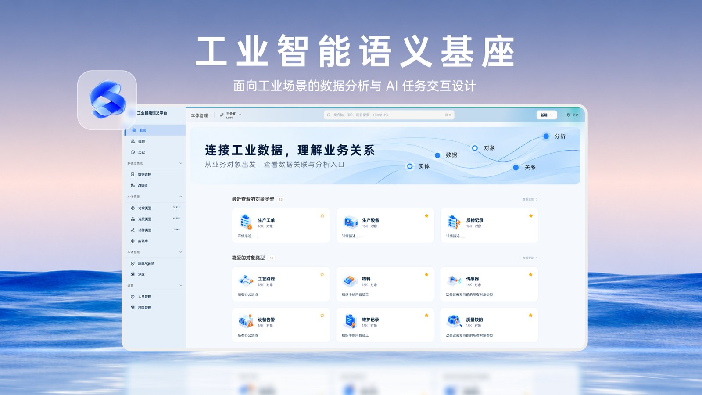

Industrial Semantic Base · Quality Agent
An AI agent that helps quality engineers find the cause of bearing defects, with the evidence behind every conclusion.
Live in a real factory: 2–3 production lines, 20+ engineers. One investigation went from ~80 to ~30 minutes.